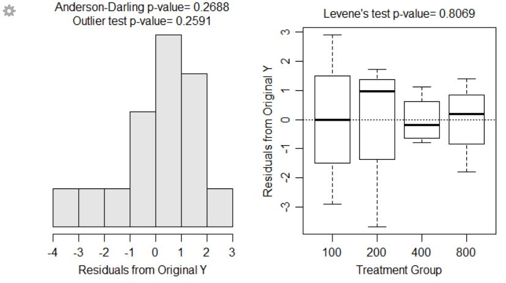
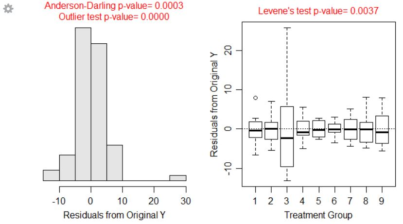
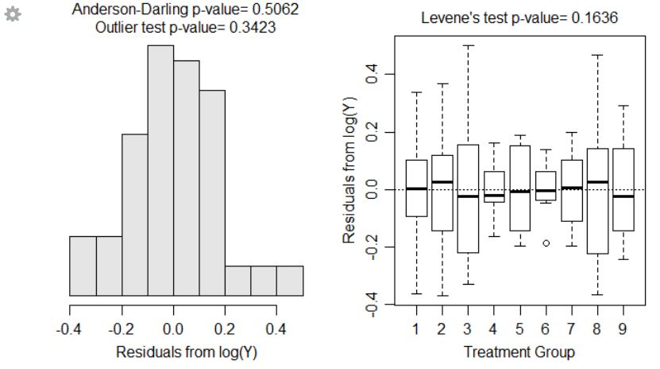
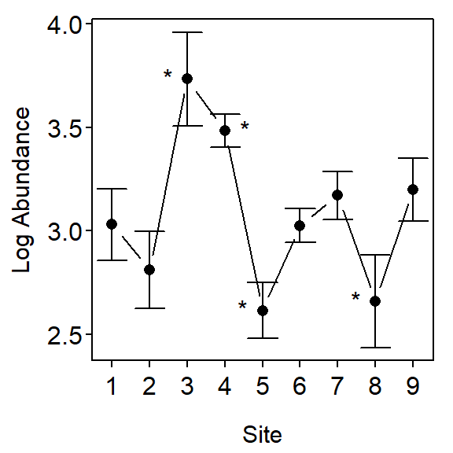

> options(show.signif.stars=FALSE)
> library(NCStats)
> library(multcomp) # for glht()A researcher is interested in the effect of irrigation on fruit production by raspberry plants. The researcher has determined that he will examine the effects of 100 ml (a maintenance amount), 200, 400, and 800 ml of water per pot. The researcher had 16 identical planting pots available and much more than that number of raspberry plant seedlings. A square table for growing the plants in a greenhouse is available. He had enough time to let the plants mature (i.e., produce berries) or not. At the end of this period, the total weight (g) of mature berries was recorded.
> setwd("C:/aaaWork/Web/GitHub/NCMTH207/modules/Anova-1Way")
> rasp <- read.csv("Raspberry.csv")
> str(rasp)'data.frame': 16 obs. of 2 variables:
$ water : int 100 100 100 100 200 200 200 200 400 400 ...
$ weight: num 8.1 10.9 11.1 13.9 12.2 11.5 11.4 6.8 6.5 5.5 ...> rasp$water <- factor(rasp$water)
> str(rasp)'data.frame': 16 obs. of 2 variables:
$ water : Factor w/ 4 levels "100","200","400",..: 1 1 1 1 2 2 2 2 3 3 ...
$ weight: num 8.1 10.9 11.1 13.9 12.2 11.5 11.4 6.8 6.5 5.5 ...> lm1 <- lm(weight~water,data=rasp)
> anova(lm1) Df Sum Sq Mean Sq F value Pr(>F)
water 3 115.042 38.347 10.793 0.001004
Residuals 12 42.635 3.553 > cbind(Ests=coef(lm1),confint(lm1)) Ests 2.5 % 97.5 %
(Intercept) 11.000 8.946558 13.053442
water200 -0.525 -3.429006 2.379006
water400 -5.625 -8.529006 -2.720994
water800 -5.600 -8.504006 -2.695994> fitPlot(lm1,xlab="Water Treatment (ml)",ylab="Weight (g)")> transChooser(lm1)
> rasp.mc <- glht(lm1, mcp(water = "Tukey"))
> summary(rasp.mc) Estimate Std. Error t value p value
200 - 100 = 0 -0.525 1.332838 -0.39389620 0.978302479
400 - 100 = 0 -5.625 1.332838 -4.22031642 0.005735483
800 - 100 = 0 -5.600 1.332838 -4.20155946 0.005792517
400 - 200 = 0 -5.100 1.332838 -3.82642022 0.011260923
800 - 200 = 0 -5.075 1.332838 -3.80766326 0.011580221
800 - 400 = 0 0.025 1.332838 0.01875696 0.999997485> confint(rasp.mc) Estimate lwr upr
200 - 100 -0.525 -4.47969 3.42969
400 - 100 -5.625 -9.57969 -1.67031
800 - 100 -5.600 -9.55469 -1.64531
400 - 200 -5.100 -9.05469 -1.14531
800 - 200 -5.075 -9.02969 -1.12031
800 - 400 0.025 -3.92969 3.97969> fitPlot(lm1,xlab="Water Treatment (ml)",ylab="Weight (g)")
> addSigLetters(lm1,lets=c("a","a","b","b"),pos=c(2,4,2,4))To examine the effect of effluent releases on benthic organisms in the release area, researchers recorded the total abundance of benthic organisms at eight haphazardly-selected sublocations at each of eight control locations (thought to have not been impacted by the effluent release) and one potentially impacted location. Use the data in BenthicInfaunal.csv to determine if the mean abundance of benthic organisms differs between the locations (and, especially, if the impacted location differs from any of the control locations).
> ben <- read.csv("BenthicInfaunal.csv")
> ben$site <- factor(ben$site)
> str(ben)'data.frame': 72 obs. of 2 variables:
$ site : Factor w/ 9 levels "1","2","3","4",..: 1 1 1 1 1 1 1 1 2 2 ...
$ abundance: num 14.4 20.4 21.2 17.6 29 ...> lm2 <- lm(abundance~site,data=ben)> transChooser(lm2)
> transChooser(lm2) # interactively adjust lambdas
> ben$logab <- log(ben$abundance)
> lm3 <- lm(logab~site,data=ben)> anova(lm3) Df Sum Sq Mean Sq F value Pr(>F)
site 8 8.6683 1.08353 29.066 < 2.2e-16
Residuals 63 2.3485 0.03728 > ben.mc <- glht(lm3, mcp(site = "Dunnett"))
> summary(ben.mc) Estimate Std. Error t value p value
2 - 1 = 0 -0.21843454 0.09653725 -2.26269698 1.457145e-01
3 - 1 = 0 0.70318863 0.09653725 7.28411718 5.074021e-09
4 - 1 = 0 0.45383639 0.09653725 4.70115314 1.037786e-04
5 - 1 = 0 -0.41485933 0.09653725 -4.29740160 4.439483e-04
6 - 1 = 0 -0.00423765 0.09653725 -0.04389653 1.000000e+00
7 - 1 = 0 0.14028047 0.09653725 1.45312275 5.796810e-01
8 - 1 = 0 -0.37186732 0.09653725 -3.85206051 1.932862e-03
9 - 1 = 0 0.16866808 0.09653725 1.74718135 3.798308e-01> fitPlot(lm3,ylab="Log Abundance",xlab="Site")
> addSigLetters(lm3,lets=c("","","*","*","*","","","*",""),pos=c(2,4,2,4,2,2,4,2,4))
> confint(ben.mc) Estimate lwr upr
2 - 1 -0.21843454 -0.48189860 0.04502952
3 - 1 0.70318863 0.43972457 0.96665269
4 - 1 0.45383639 0.19037233 0.71730045
5 - 1 -0.41485933 -0.67832339 -0.15139527
6 - 1 -0.00423765 -0.26770171 0.25922641
7 - 1 0.14028047 -0.12318359 0.40374453
8 - 1 -0.37186732 -0.63533138 -0.10840327
9 - 1 0.16866808 -0.09479598 0.43213214> exp(confint(ben.mc)$confint) Estimate lwr upr
2 - 1 0.8037761 0.6176728 1.0459518
3 - 1 2.0201841 1.5524383 2.6288605
4 - 1 1.5743404 1.2098236 2.0486853
5 - 1 0.6604332 0.5075190 0.8594201
6 - 1 0.9957713 0.7652142 1.2957947
7 - 1 1.1505965 0.8841917 1.4972683
8 - 1 0.6894457 0.5298140 0.8971740
9 - 1 1.1837272 0.9096514 1.5403812